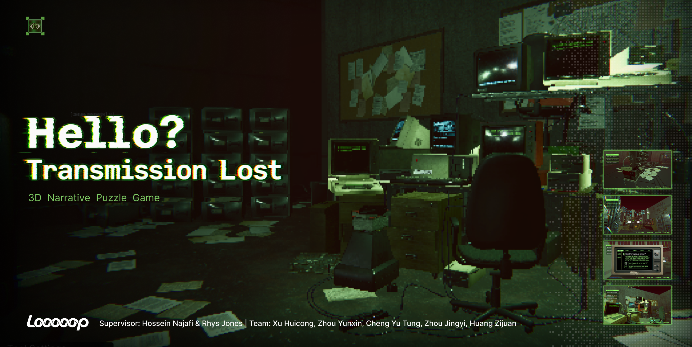
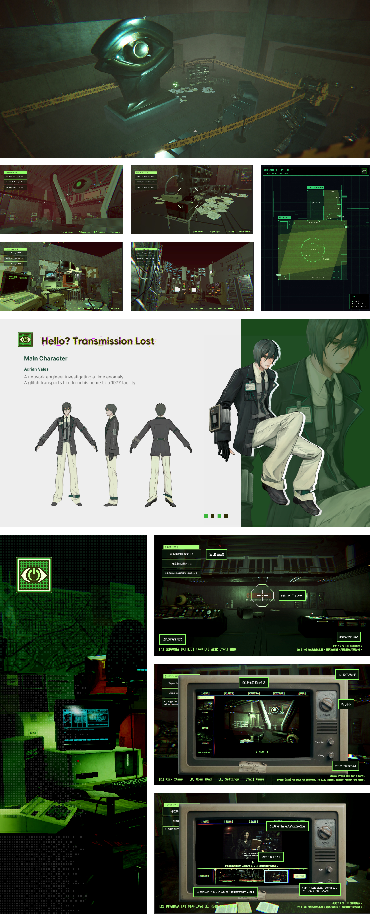

← 返回所有作品

PROJECT OVERVIEW / 项目概览
Hello? Transmission Lost
《Hello? Transmission Lost》是一款以监控、时间错位与信息重构为核心机制的3D叙事解谜游戏。玩家需要修复损坏的监控节点、探索异常空间、收集档案与影像线索，并通过重新排列监控录像逐步重构事件真相。
个人负责内容
主要负责游戏概念、世界观与叙事框架、核心玩法及第一关关卡设计，并参与视觉概念与游戏资产制作，包括关卡功能地图、Greybox、监控与线索机制、录像排序谜题、部分3D资产、角色动画及影像线索制作。
